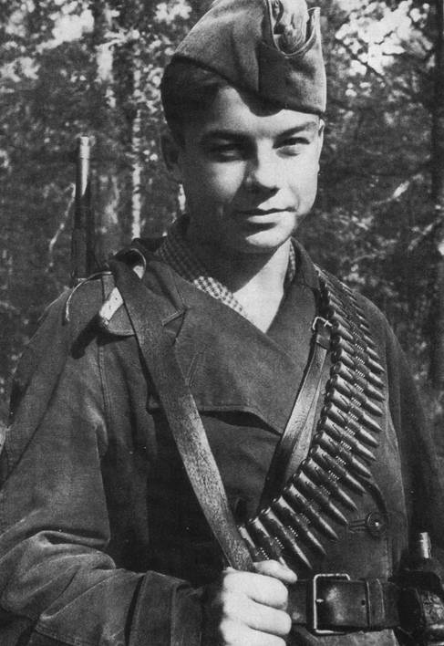

Васи́лий Ива́нович Коробко́ или Ва́ся Коробко́ (31 марта 1927, деревня Погорельцы Семёновского района Черниговской области — 1 апреля 1944) — пионер-герой, вступил в ВЛКСМ в партизанском отряде, юный партизан, награждён орденами Ленина, Красного Знамени, Отечественной войны 1 степени, медалью «Партизану Отечественной войны» 1 степени.>
Для перехода в википедию кликните сюда.
Вместе с партизанами Вася уничтожил девять поездов, сотни гитлеровцев. Погиб, прикрывая отход товарищей, попавших во вражескую засаду. Родился 31 марта 1927 года в селе Погорельцы Семёновского района Черниговской области УССР. С началом Великой Отечественной войны фронт подошёл вплотную к селу Погорельцы. На окраине, прикрывая отход наших частей, оборону держала рота. Патроны бойцам подносил Вася Коробко. Однажды на свой страх и риск Вася подпилил сваи моста возле своей родной деревни. Первый же фашистский бронетранспортёр, который заехал на этот мост, рухнул с него и вышел из строя. Потом Вася стал партизаном. Партизаны убедились, что Васе можно доверять, и поручили ему серьёзное дело: стать разведчиком в логове врага. В штабе фашистов он топит печи, колет дрова, а сам присматривается, запоминает, передаёт партизанам сведения. Каратели, задумавшие истребить партизан, заставили мальчика вести их в лес. Но Вася вывел гитлеровцев к засаде полицаев. Гитлеровцы, в темноте приняв их за партизан, открыли бешеный огонь, перебили всех полицаев и сами понесли большие потери. Василий Коробко стал отличным подрывником, принял участие в уничтожении девяти поездов с живой силой и техникой врага. Позднее он был принят в партизанское соединение Героя Советского Союза Петра Петровича Вершигоры... Погиб смертью героя в бою 1 апреля 1944 года при выполнении очередного задания в Белоруссии. Подвиги Василия Коробко отмечены орденами Ленина, Красного Знамени, Отечественной войны I степени, медалью «Партизану Отечественной войны» I степени.